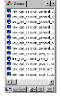

Groups Pane
The Groups pane displays a list of saved groups. The bottom of this pane also provides shortcut buttons for performing group operations.

For more information on working with groups, see Working With Groups.